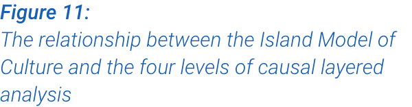
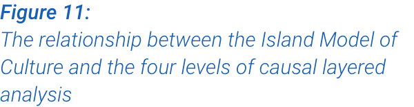
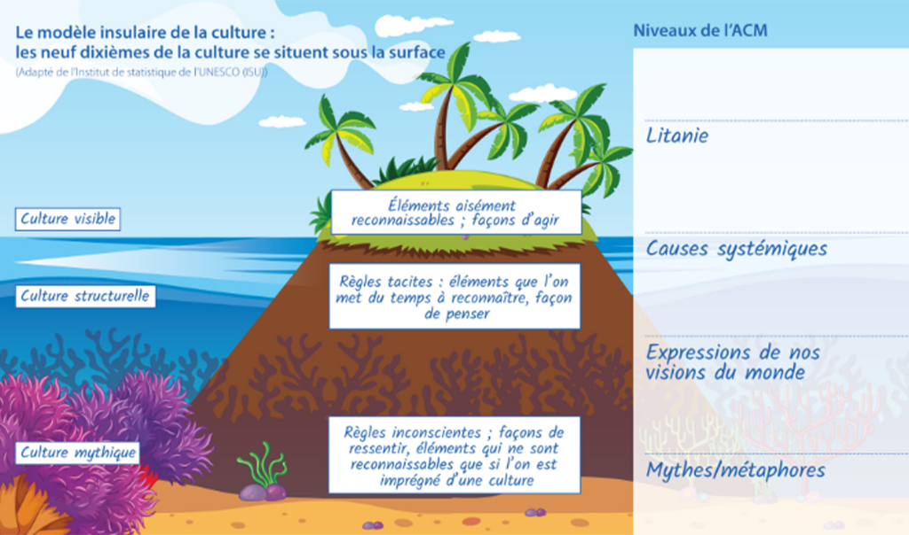

+


+

 


ACM
Réalité passée/présente
Réalité nouvelle/future
LITANIE
Discours dominant décrivant
l'état actuel ou désiré des
choses.
l'état actuel ou désiré des
choses.
Les Océaniens ont besoin
d'aide et d'un sauveur. Les
populations océaniennes n'ont
pas la capacité de piloter elles-
mêmes leur développement.
d'aide et d'un sauveur. Les
populations océaniennes n'ont
pas la capacité de piloter elles-
mêmes leur développement.
Les Océaniens ont les
connaissances, actifs et outils
pour piloter leur propre
développement. Les Océaniens
disposent des moyens
d'expression et des capacités
d'action nécessaires pour
prendre en main collectivement
leur destinée.
connaissances, actifs et outils
pour piloter leur propre
développement. Les Océaniens
disposent des moyens
d'expression et des capacités
d'action nécessaires pour
prendre en main collectivement
leur destinée.
CAUSES
SYSTÉMIQUES
Colonisation. La politique
de l'aide au développement
dans le Pacifique. La place du
Pacifique dans les relations
internationales et les réalités
des "petits" États insulaires en
développement.
de l'aide au développement
dans le Pacifique. La place du
Pacifique dans les relations
internationales et les réalités
des "petits" États insulaires en
développement.
Décolonisation de nos
politiques et de nos pratiques.
Reconnaissance de la richesse et
des forces culturelles que nous
possédons en tant que peuple.
politiques et de nos pratiques.
Reconnaissance de la richesse et
des forces culturelles que nous
possédons en tant que peuple.
EXPRESSIONS DES VISIONS
DU MONDE
DU MONDE
Prismes grâce auxquels nous
appréhendons et façonnons
notre monde.
Les "petits" États insulaires en
développement, incluant tous
les États et Territoires insulaires
océaniens, sont vulnérables et
isolés, et ils opèrent à partir d'un
modèle de déficit.
développement, incluant tous
les États et Territoires insulaires
océaniens, sont vulnérables et
isolés, et ils opèrent à partir d'un
modèle de déficit.
Application d'une approche
par les forces pour le
développement du Pacifique.
Modification de la rhétorique
régionale (économique, sociale
et politique) et mise en avant de
la trame narrative du Pacifique
bleu.
par les forces pour le
développement du Pacifique.
Modification de la rhétorique
régionale (économique, sociale
et politique) et mise en avant de
la trame narrative du Pacifique
bleu.
MYTHES/METAPHORES
Récits fondateurs inconscients.
Tagi a le pu mate:
Semblable au cri du triton
ou de la conque qui va
mourir - désigne une personne
en danger de mort.
ou de la conque qui va
mourir - désigne une personne
en danger de mort.
Vivili fa’amanu o matagi:
Fofo alamea:
Nous avons en nous la solution
à nos propres difficultés. Nous faisons
partie du problème, mais
aussi de la solution.
à nos propres difficultés. Nous faisons
partie du problème, mais
aussi de la solution.
Sa’ilimalo:
Tirer parti d'un héritage pour
rechercher ou obtenir de grandes
réalisations, pour le bien
du collectif.
rechercher ou obtenir de grandes
réalisations, pour le bien
du collectif.